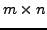

#include <gandalf/vision/mask2D.h>
#include <gandalf/vision/convolve2D.h>
This module deals with creating 2D convolution masks, used in Gandalf for convolving an image with a bidimensional filter (understood as a matrix). The dimensions of these masks (number of rows and columns) must be necessarily odd, otherwise an error will occur.
Similarly to 1D convolutions, three types of masks are considered, although the meaning of their names is a bit different from that of Gan_Mask1D.
/* format of 2D convolution mask */
typedef enum { GAN_MASK2D_SYMMETRIC, GAN_MASK2D_ANTISYMMETRIC,
GAN_MASK2D_GENERIC }
Gan_Mask2DFormat;
On the one hand, GAN_MASK2D_GENERIC represents a 
generic mask with no regularity in the values that contains, where
 is the number of rows and
is the number of rows and  is the number of columns (both are odd).
is the number of columns (both are odd).
If we divide the 2D mask in four sections or quadrants by taking the vertical and horizontal axes through the center of the mask, we shall consider the upper left quadrant as representative of the values of the whole mask for both GAN_MASK2D_SYMMETRIC and GAN_MASK2D_ANTISYMMETRIC types. For the symmetric case, the four quadrants of the mask contain exactly the same values, and therefore they are symmetric with respect to the before mentioned axes. There are only independent elements of the mask.
On the other hand, for the antisymmetric case, the upper left quadrant and the lower right one have the same values, while the upper right quadrant and the lower left one have the opposite values. The elements located exactly at the vertical and horizontal axes through the center are equal zero. In this case there are only independent elements of the mask.
To create a 2D generic convolution mask of floats, for example, the following code can be used:
Gan_Mask2D *pMask_gen;
unsigned int rows = 9, cols = 7;
/* create symmetric 2D convolution mask */
pMask_gen = *gan_mask2D_alloc ( GAN_MASK2D_GENERIC,
GAN_FLOAT, rows, cols );
For a 2D symmetric convolution mask of the same size, we would have written the following lines:
Gan_Mask2D *pMask_sym;
unsigned int rows = 9, cols = 7;
/* create symmetric 2D convolution mask */
pMask_sym = *gan_mask2D_alloc ( GAN_MASK2D_SYMMETRIC,
GAN_FLOAT, rows, cols );
Remember that in this case only elements have to be specified (see below how). Notice, however, that the numbers of rows and columns in the mask creation refer to the total size, so we still request for a mask. Internally the gan_mask2D_alloc function knows how many elements have to be allocated according to the mask format.
Similarly, for a 2D antisymmetric convolution mask of the same size, only elements need to be specified and we could have:
Gan_Mask2D *pMask_antisym;
unsigned int rows = 9, cols = 7;
/* create antisymmetric 2D convolution mask */
pMask_antisym = *gan_mask2D_alloc ( GAN_MASK2D_ANTISYMMETRIC,
GAN_FLOAT, rows, cols );
In all the three previous cases, there is memory allocation that is transparent and ``intelligent'' for the end-user, in the sense that only the adequate number of elements is allocated according to the mask format.
Another way to initialize a mask is by means of the following function:
Gan_Mask2D *gan_mask2D_alloc_data ( Gan_Mask2DFormat format,
Gan_Matrix *data,
unsigned int rows,
unsigned int cols );
In this case, a 2D convolution mask is generated, the memory for the corresponding number of elements is allocated (as in the previous fucntion), and, as well, these elements are given a value by means of a Gan_Matrix parameter. Bear in mind that this matrix must necessarily have the adequate size.
In the following example, a symmetric mask is initialized with a matrix of data.
// Generation of a 9x7 symmetric convolution mask.
Gan_Matrix *mat = gan_mat_alloc(5,4);
mat = gan_mat_fill_zero_q(mat,5,4);
gan_mat_set_el(mat,0,0,1.);
gan_mat_set_el(mat,1,2,2.);
gan_mat_set_el(mat,2,1,3.);
gan_mat_set_el(mat,3,3,1.);
gan_mat_set_el(mat,4,0,2.);
gan_mat_set_el(mat,0,2,3.);
gan_mat_set_el(mat,1,1,1.);
gan_mat_set_el(mat,3,1,2.);
gan_mat_set_el(mat,4,2,3.);
gan_mat_set_el(mat,2,2,1.);
Gan_Mask2D *mask_sym;
mask_sym = gan_mask2D_alloc_data (GAN_MASK2D_SYMMETRIC,mat,9,7);
The convolution mask can then be applied to an image, by means of the following routines (with the usual convention _q for the ``quick'' version and _s for the ``slow'' one):
Gan_Image *gan_image_convolve2D_q ( Gan_Image *image,
Gan_ImageChannelType channel,
Gan_Mask2D *mask,
Gan_Image *dest );
Gan_Image *gan_image_convolve2D_s ( Gan_Image *image,
Gan_ImageChannelType channel,
Gan_Mask2D *mask );
In these functions, the parameters are: the image to convolve, the channel to convolve and the 2D convolution mask to use. For the ``quick'' version, there is a fourth parameter, which is the image that stores the result, with no memory allocation for it.
Let's see an example of use:
Gan_Image *pOriginalImage; /* declare original image */
Gan_Image *pSmoothedImage; /* declare smoothed image */
Gan_Mask2D *pMask;
/*
Here we have to do the following operations:
1. Fill the original image with values (for example, with
grey levels).
2. Fill the 2D mask with values as shown before.
3. Allocate memory for the result image.
*/
/* Apply smoothing */
gan_image_convolve2D_q ( pOriginalImage,
GAN_INTENSITY_CHANNEL,
pMask,
pSmoothedImage );
According to the image format, the following channels can be used:
Notice that the convolution is applied only where all the pixels within the mask are available. Therefore, if the size of the original image is and the size of the mask is , then the size of the convolved image is .
To free a convolution mask use the following function:
gan_mask2D_free ( pMask );